Class awful.tooltip
Tooltip module for awesome objects.
A tooltip is a small hint displayed when the mouse cursor
hovers over a specific item.
In awesome, a tooltip can be linked with almost any
object having a :connect_signal() method and receiving
mouse::enter and mouse::leave signals.
How to create a tooltip?
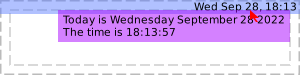
local mytextclock = wibox.widget.textclock() local myclock_t = awful.tooltip { objects = { mytextclock }, timer_function = function() return os.date('Today is %A %B %d %Y\nThe time is %T') end, }
Alternatively, you can use mouse::enter signal:

local mytextclock = wibox.widget.textclock() local myclock_t = awful.tooltip { } myclock_t:add_to_object(mytextclock) mytextclock:connect_signal('mouse::enter', function() myclock_t.text = os.date('Today is %A %B %d %Y\nThe time is %T') end)
How to create a tooltip without objects?
local tt = awful.tooltip { text = 'A tooltip!', visible = true, } tt.bg = beautiful.bg_normal
How to add the same tooltip to multiple objects?
myclock_t:add_to_object(obj1) myclock_t:add_to_object(obj2)
Now the same tooltip is attached to myclock, obj1, obj2.
How to remove a tooltip from several objects?
myclock_t:remove_from_object(obj1) myclock_t:remove_from_object(obj2)
Now the same tooltip is only attached to myclock.
Info:
- Copyright: 2009 Sébastien Gross
- Author: Sébastien Gross <seb•ɱɩɲʋʃ•awesome•ɑƬ•chezwam•ɖɵʈ•org>
Functions
| awful.tooltip (args) | Create a new tooltip and link it to a widget. |
Object properties
| wibox | The wibox containing the tooltip widgets. |
| visible | Is the tooltip visible? |
| align | The horizontal alignment. |
| shape | The shape of the tooltip window. |
| mode | Set the tooltip positioning mode. |
| preferred_positions | The preferred positions when in outside mode. |
| preferred_alignments | The preferred alignment when using the outside mode. |
| text | Change displayed text. |
| markup | Change displayed markup. |
| timeout | Change the tooltip’s update interval. |
| margins | Set all margins around the tooltip textbox |
| border_width | The border width. |
| border_color | The border color. |
| margins_leftright | Set the margins around the left and right of the tooltip textbox |
| margins_topbottom | Set the margins around the top and bottom of the tooltip textbox |
Theme variables
| beautiful.tooltip_border_color | The tooltip border color. |
| beautiful.tooltip_bg | The tooltip background color. |
| beautiful.tooltip_fg | The tooltip foregound (text) color. |
| beautiful.tooltip_font | The tooltip font. |
| beautiful.tooltip_border_width | The tooltip border width. |
| beautiful.tooltip_opacity | The tooltip opacity. |
| beautiful.tooltip_shape | The default tooltip shape. |
| beautiful.tooltip_align | The default tooltip alignment. |
Methods
| awful.tooltip:set_shape (s) | Set the tooltip shape. |
| awful.tooltip:add_to_object (self, obj) | Add tooltip to an object. |
| awful.tooltip:remove_from_object (self, obj) | Remove tooltip from an object. |
Functions
Methods- awful.tooltip (args)
-
Create a new tooltip and link it to a widget.
Tooltips emit
property::visiblewhen their visibility changes.- args Arguments for tooltip creation.
- timer_function
function
A function to dynamically set the
tooltip text. Its return value will be passed to
wibox.widget.textbox.set_markup. - timeout
number
The timeout value for
timer_function. (default 1) - objects table A list of objects linked to the tooltip. (optional)
- delay_show number Delay showing the tooltip by this many seconds. (optional)
- margin_leftright integer The left/right margin for the text. (default apply_dpi(5))
- margin_topbottom integer The top/bottom margin for the text. (default apply_dpi(3))
- shape gears.shape The shape (default nil)
- bg string The background color (optional)
- fg string The foreground color (optional)
- border_color string The tooltip border color (optional)
- border_width number The tooltip border width (optional)
- align string The horizontal alignment (optional)
- font string The tooltip font (optional)
- opacity number The tooltip opacity (optional)
- timer_function
function
A function to dynamically set the
tooltip text. Its return value will be passed to
Returns:
-
awful.tooltip
The created tooltip.
See also:
- args Arguments for tooltip creation.
Object properties
- wibox
-
The wibox containing the tooltip widgets.
Type:
- wibox `
- visible
-
Is the tooltip visible?
Type:
- boolean
- align
-
The horizontal alignment.
This is valid for the mouse mode only. For the outside mode, use preferred_positions.
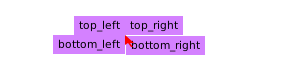
The following values are valid:
- top_left
- left
- bottom_left
- right
- top_right
- bottom_right
- bottom
- top
See also:
- shape
-
The shape of the tooltip window.
If the shape require some parameters, use set_shape.
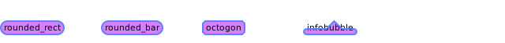
See also:
- mode
-
Set the tooltip positioning mode. This affects how the tooltip is placed. By default, the tooltip is aligned close to the mouse cursor. It is also possible to place the tooltip relative to the widget geometry.
mouse:
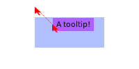
outside:
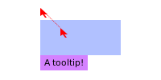
Valid modes are:
- “mouse”: Next to the mouse cursor
- “outside”: Outside of the widget
Type:
- string
- preferred_positions
-
The preferred positions when in
outsidemode.
If the tooltip fits on multiple sides of the drawable, then this defines the priority.
The valid table values are:
- “top”
- “right”
- “left”
- “bottom”
The default is:
{"top", "right", "left", "bottom"}Type:
- preferred_positions table The position, ordered by priorities
See also:
- preferred_alignments
-
The preferred alignment when using the
outsidemode.The values of the table are ordered by priority, the first one that fits will be used.
front:
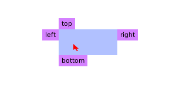
middle:
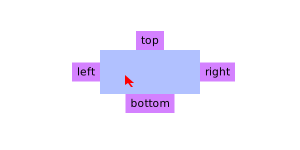
back:
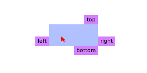
The valid table values are:
- front
- middle
- back
The default is:
{"front", "back", "middle"}Type:
- string
See also:
- text
-
Change displayed text.
Type:
- self tooltip The tooltip object.
- text
string
New tooltip text, passed to
wibox.widget.textbox.set_text.
See also:
- markup
-
Change displayed markup.
Type:
- self tooltip The tooltip object.
- text
string
New tooltip markup, passed to
wibox.widget.textbox.set_markup.
See also:
- timeout
-
Change the tooltip’s update interval.
Type:
- self tooltip A tooltip object.
- timeout number The timeout value.
- margins
-
Set all margins around the tooltip textbox
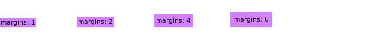
Type:
- self tooltip A tooltip object
- New number margins value
- border_width
-
The border width.
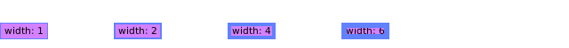
Type:
- number
- border_color
-
The border color.
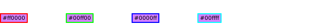
- margins_leftright
-
Set the margins around the left and right of the tooltip textbox
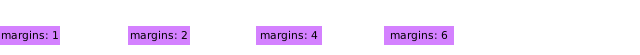
Type:
- self tooltip A tooltip object
- New number margins value
- margins_topbottom
-
Set the margins around the top and bottom of the tooltip textbox
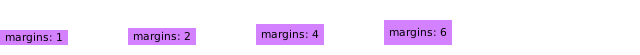
Type:
- self tooltip A tooltip object
- New number margins value
Theme variables
- beautiful.tooltip_border_color
- The tooltip border color.
- beautiful.tooltip_bg
- The tooltip background color.
- beautiful.tooltip_fg
- The tooltip foregound (text) color.
- beautiful.tooltip_font
- The tooltip font.
- beautiful.tooltip_border_width
- The tooltip border width.
- beautiful.tooltip_opacity
- The tooltip opacity.
- beautiful.tooltip_shape
-
The default tooltip shape.
The default shape for all tooltips is a rectangle. However, by setting this variable
they can default to rounded rectangle or stretched octogons.
Type:
- shape function A gears.shape compatible function (default gears.shape.rectangle)
See also:
- beautiful.tooltip_align
-
The default tooltip alignment.
Type:
- string
See also:
Methods
- awful.tooltip:set_shape (s)
-
Set the tooltip shape.
All other arguments will be passed to the shape function.
- s gears.shape The shape
See also:
- awful.tooltip:add_to_object (self, obj)
-
Add tooltip to an object.
- self tooltip The tooltip.
- obj
gears.object
An object with
mouse::enterandmouse::leavesignals.
- awful.tooltip:remove_from_object (self, obj)
-
Remove tooltip from an object.
- self tooltip The tooltip.
- obj
gears.object
An object with
mouse::enterandmouse::leavesignals.